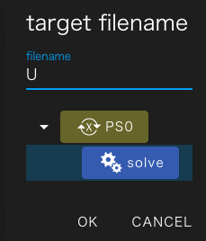
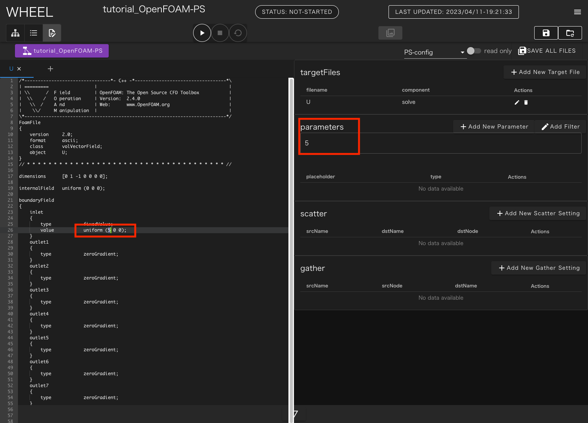
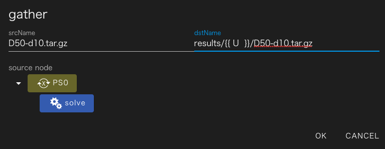
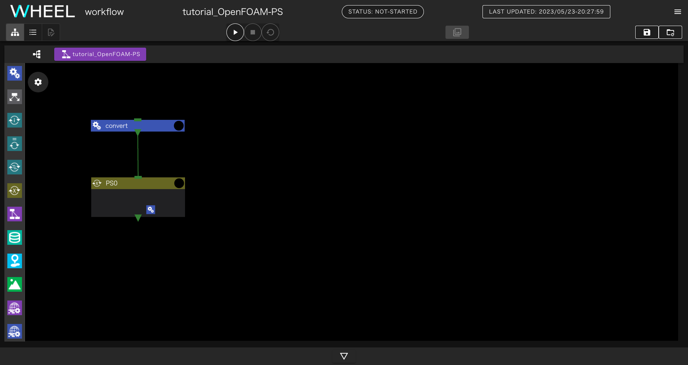
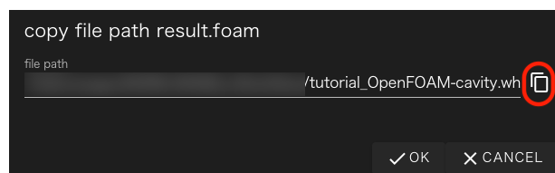
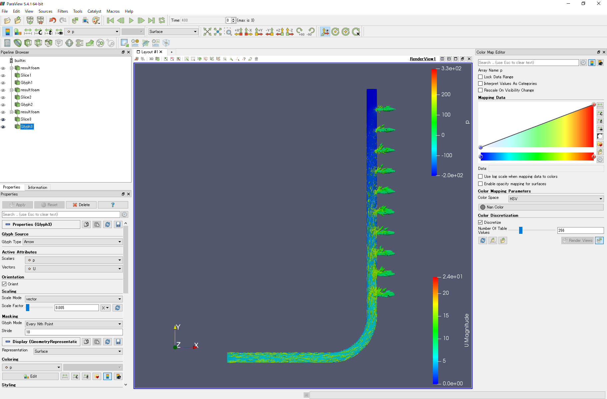
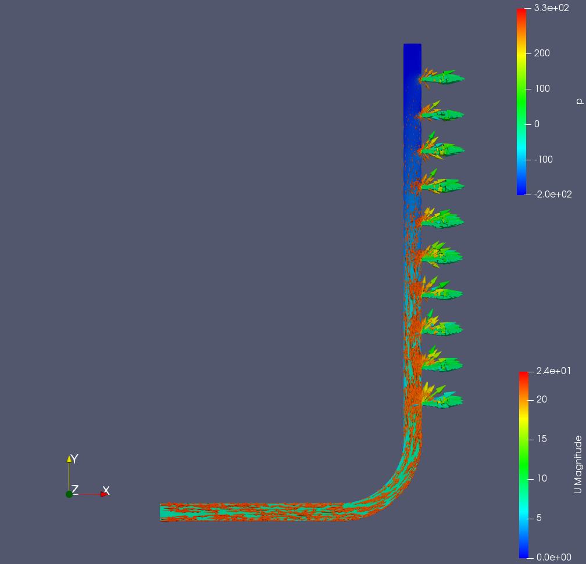

OpenFOAMを利用したパラメトリックスタディ解析ワークフロー #
本章では、WHEELを用いた計算事例として「OpenFOAMを利用したパラメトリックスタディ解析ワークフロー」を紹介します。
3次元CADで作成した分配菅モデルに対して、intletの流速を対象としたパラメータスタディを行ないます。
目次
- 解析概要
- WHEELによるワークフローの作成
- Parameter Study コンポーネント
- Task コンポーネント
- ジョブの投入
- 解析結果の確認
1. 解析概要 #
本事例で使用する解析対象モデルは、分配菅モデルです。
解析モデル D50-d10 #

inletから流入した流体がoutletから出ていく解析を実施します。
事前にこちらのファイルをダウンロードして展開しておいてください。 アーカイブ内には次の3つのファイルが含まれます。
- pipe.unv メッシュ
- U 流速の初期条件ファイル
- D50-d10.tgz ケースファイル
なお、メッシュはCADモデルを元に、「SALOME-MECA」を用いて作成し Ideas universal形式でメッシュデータをエキスポートしたものです。
本チュートリアルの最終ステップでは、WHEELサーバにインストールされた ParaViewを使用して計算結果の可視化を行ないます。
このため、WHEELをリモートのサーバにインストールしてチュートリアルを実行していたり ParaViewがインストールされていない環境で実行している場合は、 「解析結果の確認」の章は実行できません。
2. ワークフロー作成 #
新規プロジェクトを作成し、taskコンポーネントを2つとPSコンポーネントを1つ 追加してください。 1つ目のtaskコンポーネントの名前は convert 、2つ目のtaskコンポーネントの名前は extract としてください。
また、PSコンポーネント内部にtaskコンポーネントを1つ追加し、 solve という名前にしてください。
convertコンポーネントの設定 #
convert コンポーネントのファイルエリアを開き、事前にダウンロードした pipe.unv をアップロードしてください。
ファイルのアップロードは、このエリアにファイルをドロップするか、 uploadボタンをクリックした時に 表示されるダイアログで、アップロードするファイルを選択することで行ないます。 詳しい操作方法は、リファレンスマニュアル を 参照してください。
続いて、run.sh という名前で新規ファイルを作成し次の内容を記入してください。
. /vol0004/apps/oss/spack-v0.17.0/share/spack/setup-env.sh
spack load 'openfoam@2012%fj@4.8.0'
ideasUnvToFoam pipe.unv
このスクリプトでは、Ideas universal形式のメッシュファイルを OpenFOAM形式へと変換します。
正常に終了すると constant/polyMesh ディレクトリに次のファイルが 生成されます。
- boundary
- owner
- faces
- neighbor
- points
コンポーネントのプロパティ画面を開いて、以下の4項目を設定してください
- script: run.sh
- host: fugaku
- useJobScheduler: 有効
- outputFiles: constant
solveコンポーネントの設定 #
solve コンポーネントのファイルエリアを開き、事前にダウンロードした ケースファイルをアップロードしてください。 また、run.sh という名前で新規ファイルを作成し次の内容を記入してください。
. /vol0004/apps/oss/spack-v0.17.0/share/spack/setup-env.sh
spack load 'openfoam@2012%fj@4.8.0'
tar xvzf D50-d10.tgz
mv ./U ./D50-d10/0
cd ./D50-d10
decomposePar
mpiexec -n 12 simpleFoam -parallel
reconstructPar
touch result.foam
cd ..
tar cvzf D50-d10.tar.gz D50-d10
コンポーネントのプロパティ画面を開いて、以下の3項目を設定してください
- script: run.sh
- host: fugaku
- useJobScheduler: 有効
PSコンポーネントの設定 #
PSコンポーネントをクリックし、output files に results を追加してください。
ファイルエリア内のある parameterSetting.json ファイルを選択した状態でテキストエディタを開いてPS設定モードにします。
Add New Target File ボタンをクリックして solve コンポーネント内の U を対象にします。

左ペインに U ファイルが開かれるので boundaryField -> inlet -> value の行 にある、 uniform (5 0 0); のうち 5 の部分を マウスで選択してください。
右ペインの parameters と書かれた部分の下のテキストフィールドに 5 と表示されます。

この状態で、 Add New Parameter ボタンをクリックしてinletの流速に設定する値を 入力します。 ここでは、5 m/sから7m/sまで1m/s刻みでパラメータスタディを行なうので min=5, max=7, step=1 を設定してください。

最後に solve コンポーネントの実行結果を回収する設定を追加します。
Add New Gather Setting ボタンをクリックしてgather設定ダイアログを表示し
solveを選択した状態で、 srcName に D50-d10.tar.gz __dstName__に
results/{{ U }}/D50-d10.tar.gz と入力してください。

以上で、PS設定ファイルの編集は完了です。画面右上の SAVE ALL FILES ボタンを クリックして編集内容を保存してください。
extractコンポーネントの設定 #
extract コンポーネントに run.sh という名前で新規ファイルを作成し次の内容を記入してください。
for i in results/*
do
pushd $i
tar xfz D50-d10.tar.gz
popd
enddo
このスクリプトは、 solve コンポーネントの出力結果を順に展開し、 paraviewを起動する準備をします。
最後にコンポーネントのプロパティを開いて、scriptに run.sh を設定してください。
ファイル依存関係の設定 #
convert のoutputFileに設定した、constatnt をPSコンポーネントに
ドロップして接続してください。
また、PSコンポーネントのoutputFileに設定した results を
extract コンポーネントにドロップして接続してください。
以上でワークフローの作成は完了です。

3. プロジェクトの実行 #
run ボタンをクリックして、プロジェクトを実行してください。 初めに、富岳へのログインに必要な秘密鍵のパスワードが聞かれますが、それ移行はワークフローの終了まで操作は不要です。
4. 解析結果の確認 #
解析結果の確認を行います。
extract コンポーネントのプロパティ画面を開いてFilesエリアを表示し
resultsディレクトリ -> 流入速度のディレクトリ と辿っていってください。
その下に result.foam ファイルが表示されるので、これをクリックして選択し
shareボタンをクリックしてください。

result.foam ファイルのパスが表示されるので、 コピーボタンをクリックしてコピーしこのファイル名を引数に このファイル名を引数にparaviewを起動してください。

解析結果 #
流入速度、5[m/s], 6[m/s], 7[m/s] の各
流入速度5[m/s] の解析結果において、分配菅の断面図に 速度 U を、ベクトルで 圧力 p を表示した結果は以下になります。
流入速度5[m/s] #

同様に、流入速度6[m/s]、流入速度7[m/s] の結果を示します。
流入速度6[m/s] #

流入速度7[m/s] #

OpenFOAMを利用したパラメトリックスタディ解析ワークフロー例は以上になります。